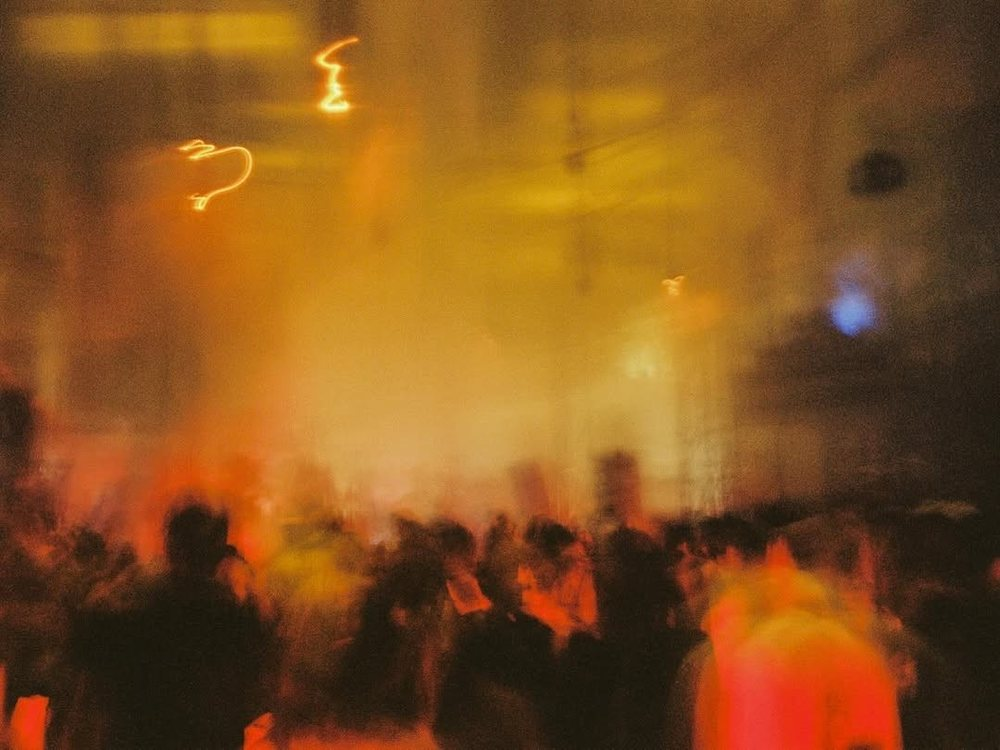

9:41
CANCEL
DRAFT SAVED
EDIT REPORT
Grand Mint Festival 2026 · Oct 17–18
PHOTOS
4 / 24
탭해서 리포트에 넣을 사진을 골라요 · 첫 장이 대표 사진
COVER

ADD
HIGHLIGHT
12 / 40
RATING
5 / 5
ARTISTS
2 SEEN
내 타임테이블에서 불러왔어요 · 실제로 본 공연만 체크
페퍼톤스
17:20 · MINT BREEZE
터치드
18:50 · MIDNIGHT SUNSET
이소라
20:20 · MINT BREEZE
아티스트 추가
REVIEW
75 / 300
이소라 ‘바람이 분다’에서 다 같이 조용해진 순간이 아직도 생생함. 가을 올림픽공원 날씨도 완벽했고, 내년에도 꼭 가고 싶은 페스티벌.
WOULD GO AGAIN
SAVE REPORT